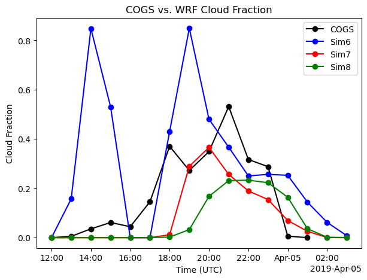
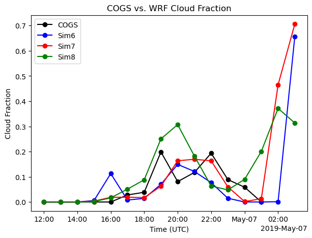

LASSO - LES simulations with different Large-Scale forcing scales for 4th April 2019 over SGP
# Libraries required for this tutorial...
# import dask
from datetime import datetime
import numpy as np
import xarray as xr
import xwrf
import matplotlib.pyplot as plt
import matplotlib.pyplot as pl
# Plotting wrfstat variables...
from distributed import Client
client = Client("tcp://127.0.0.1:44455")
path_shcu_root = "/data/project/ARM_Summer_School_2024_Data/lasso_tutorial/ShCu/untar" # on Jupyter
case_date = datetime(2019, 4, 4)
sim_id = [6,7,8]
ds_stat_1 = xr.open_dataset(f"{path_shcu_root}/{case_date:%Y%m%d}/sim{sim_id[0]:04d}/raw_model/wrfstat_d01_{case_date:%Y-%m-%d_12:00:00}.nc")
ds_stat_2 = xr.open_dataset(f"{path_shcu_root}/{case_date:%Y%m%d}/sim{sim_id[1]:04d}/raw_model/wrfstat_d01_{case_date:%Y-%m-%d_12:00:00}.nc")
ds_stat_3 = xr.open_dataset(f"{path_shcu_root}/{case_date:%Y%m%d}/sim{sim_id[2]:04d}/raw_model/wrfstat_d01_{case_date:%Y-%m-%d_12:00:00}.nc")
ds_stat_1 = ds_stat_1.assign_coords(height=(ds_stat_1["CSP_Z"]))
ds_stat_2 = ds_stat_2.assign_coords(height=(ds_stat_2["CSP_Z"]))
ds_stat_3 = ds_stat_3.assign_coords(height=(ds_stat_3["CSP_Z"]))
ds_stat_3["Time"] = ds_stat_3["XTIME"]
ds_stat_2["Time"] = ds_stat_2["XTIME"]
ds_stat_1["Time"] = ds_stat_1["XTIME"]
# Note the extra details required by open_mfdataset to connect the files together in time.
ds_xwrf_1 = xr.open_mfdataset(f"{path_shcu_root}/{case_date:%Y%m%d}/sim{sim_id[0]:04d}/raw_model/wrfout_d01_*.nc", combine="nested", concat_dim="Time").xwrf.postprocess()
ds_xwrf_2 = xr.open_mfdataset(f"{path_shcu_root}/{case_date:%Y%m%d}/sim{sim_id[1]:04d}/raw_model/wrfout_d01_*.nc", combine="nested", concat_dim="Time").xwrf.postprocess()
ds_xwrf_3 = xr.open_mfdataset(f"{path_shcu_root}/{case_date:%Y%m%d}/sim{sim_id[2]:04d}/raw_model/wrfout_d01_*.nc", combine="nested", concat_dim="Time").xwrf.postprocess()
ds_xwrf_3["Time"] = ds_xwrf_3["XTIME"]
ds_xwrf_2["Time"] = ds_xwrf_2["XTIME"]
ds_xwrf_1["Time"] = ds_xwrf_1["XTIME"]
Advection Input to LES simulations with different forcings scale and corresponding LES output thermodynamic and Cloud time-height profiles
Humidity and Heat coming into the LES domain due to large-scale forcings is dinstinctly different for increasing forcing scales. These also correspond to very different intensities in cloud water content and other cloud structure properties.
import numpy as np
import matplotlib.ticker as tkr
pl.rcParams['xtick.labelsize'] = 16
pl.rcParams['ytick.labelsize'] = 16
pl.rcParams['axes.labelsize'] = 16
pl.rcParams['axes.titlesize'] = 16
pl.rcParams['legend.fontsize'] = 16
def plot_contour(var_name,label_name,min_level,max_level):
fig,ax = pl.subplots(1,3,figsize=(27,5))
pl.subplot(131)
ds_stat_1[var_name].plot.contourf(x='Time',y='height',levels=np.linspace(min_level,max_level,10),add_colorbar=False,cmap='coolwarm')
pl.ylim([0,5000])
pl.title(label_name[0])
pl.subplot(132)
ds_stat_2[var_name].plot.contourf(x='Time',y='height',levels=np.linspace(min_level,max_level,10),add_colorbar=False,cmap='coolwarm')
pl.title(label_name[1])
pl.ylabel('')
pl.ylim([0,5000])
pl.subplot(133)
p1=ds_stat_3[var_name].plot.contourf(x='Time',y='height',levels=np.linspace(min_level,max_level,10),add_colorbar=False,cmap='coolwarm')
pl.ylabel('')
pl.ylim([0,5000])
fig.subplots_adjust(right=0.8)
cbar_ax = fig.add_axes([0.85, 0.15, 0.05, 0.7])
cb2 = fig.colorbar(p1,format=tkr.FormatStrFormatter('%.3g'),cax=cbar_ax)
pl.title(label_name[2])
plot_contour('CSP_THDT_LSHOR',['','TH Advection Horizontal',''],-1e-4,1e-4)
plot_contour('CSP_TH',['','TH - LES',''],280,310)
plot_contour('CSP_QVDT_LSHOR',['','QV Advection Horizontal',''],0,2e-7)
plot_contour('CSP_QV',['','QV - LES',''],0,0.011)
plot_contour('CSP_QL',['','QL',''],0,5e-5)
pl.figure(figsize=(7,5))
ds_stat_1['CST_PRECT'].plot.line(label='75 km')
ds_stat_2['CST_PRECT'].plot.line(label='150 km')
ds_stat_2['CST_PRECT'].plot.line(label='300 km')
[<matplotlib.lines.Line2D at 0x7efe9ad7f3d0>]
Which of the forcing scales produces clouds close to what was observed from satellie images (GOES)?
sim_id=6
ds_cogs_1 = xr.open_dataset(f"{path_shcu_root}/{case_date:%Y%m%d}/sim{sim_id:04d}/obs_model/sgplassocogsdiagobsmod{sim_id}C1.m1.{case_date:%Y%m%d}.120000.nc")
sim_id=7
ds_cogs_2 = xr.open_dataset(f"{path_shcu_root}/{case_date:%Y%m%d}/sim{sim_id:04d}/obs_model/sgplassocogsdiagobsmod{sim_id}C1.m1.{case_date:%Y%m%d}.120000.nc")
sim_id=8
ds_cogs_3 = xr.open_dataset(f"{path_shcu_root}/{case_date:%Y%m%d}/sim{sim_id:04d}/obs_model/sgplassocogsdiagobsmod{sim_id}C1.m1.{case_date:%Y%m%d}.120000.nc")
fig, ax = plt.subplots(ncols=1,figsize=(7,5))
ds_cogs_1["low_cloud_fraction_cogs"].isel(source_type=0).plot(ax=ax, marker="o", label="COGS",color='k')
ds_cogs_1["low_cloud_fraction_cogs"].isel(source_type=1).plot(ax=ax, marker="o", label="Sim6", color='b')
ds_cogs_2["low_cloud_fraction_cogs"].isel(source_type=1).plot(ax=ax, marker="o", label="Sim7", color= 'r')
ds_cogs_3["low_cloud_fraction_cogs"].isel(source_type=1).plot(ax=ax, marker="o", label="Sim8", color = 'g')
# If you plan to share with frieds, do a little clean-up beyond the default labelling from xarray...
ax.legend()
ax.set_title("COGS vs. WRF Cloud Fraction")
ax.set_xlabel("Time (UTC)")
ax.set_ylabel("Cloud Fraction")
plt.show()
ds_may_1=xr.open_dataset('/data/project/ARM_Summer_School_2024_Data/lasso_tutorial/ShCu/untar/20190506/sim0006/obs_model/sgplassocogsdiagobsmod6C1.m1.20190506.120000.nc',decode_times=True)
ds_may_2=xr.open_dataset('/data/project/ARM_Summer_School_2024_Data/lasso_tutorial/ShCu/untar/20190506/sim0007/obs_model/sgplassocogsdiagobsmod7C1.m1.20190506.120000.nc',decode_times=True)
ds_may_3=xr.open_dataset('/data/project/ARM_Summer_School_2024_Data/lasso_tutorial/ShCu/untar/20190506/sim0008/obs_model/sgplassocogsdiagobsmod8C1.m1.20190506.120000.nc',decode_times=True)
fig, ax = plt.subplots(ncols=1,figsize=(7,5))
ds_may_1["low_cloud_fraction_cogs"].isel(source_type=0).plot(ax=ax, marker="o", label="COGS",color='k')
ds_may_1["low_cloud_fraction_cogs"].isel(source_type=1).plot(ax=ax, marker="o", label="Sim6", color='b')
ds_may_2["low_cloud_fraction_cogs"].isel(source_type=1).plot(ax=ax, marker="o", label="Sim7", color= 'r')
ds_may_3["low_cloud_fraction_cogs"].isel(source_type=1).plot(ax=ax, marker="o", label="Sim8", color = 'g')
# If you plan to share with frieds, do a little clean-up beyond the default labelling from xarray...
ax.legend()
ax.set_title("COGS vs. WRF Cloud Fraction")
ax.set_xlabel("Time (UTC)")
ax.set_ylabel("Cloud Fraction")
plt.show()


Are these differences we notice in Cloud structure statistics reprsentative of whats going on at the 3-d level?
To check this we track each individual cloud cells (cluster of all adjacent cloudy cells) defined by x,y dependent cloud water path (ql_path) > 0.005
#### Field Plots #####
import os
import numpy as np
import matplotlib.pyplot as pl
from matplotlib import cm
import math
from scipy.stats import norm
import xarray as xr
import netCDF4 as nc
import sys
sys.setrecursionlimit(1000000)
##########################################################################################
class cell:
def __init__(self, id):
self.id = id
self.value = [[],[]]
self.location = [[],[]]
self.nelements = 0
self.nelements_local = 0
def add_elements(self, i, j, var_values):
self.location[0].append(i)
self.location[1].append(j)
self.value[0].append(var_values)
self.nelements = self.nelements + 1
self.nelements_local = self.nelements_local + 1
def __del__(self):
return
##########################################################################################
def find_boolean(variable, threshold_criteria): #variable is f(i, j, t): --> outputs boolean -1 (unsatisfied) 0 (satisfied)
boolean = np.zeros(( len(variable[:,0]), len(variable[0,:])))
boolean = -1
boolean = np.where(variable[:,:]>threshold_criteria,0,-1)
return boolean;
########################################################################################
def identify_elements_in_cell(i,j,new_cell): #input the ijk at which boolean is satisfied along with boolean and new cell created
global booli;
new_cell.add_elements(i,j,cell_variable[i,j])
booli[i,j] = -1
ii=i-1; jj=j; #look west
if ii<0:
ii = nx-1
if (booli[ii,jj] == 0):
identify_elements_in_cell(ii,jj,new_cell)
ii=i+1; jj=j; #look east
if ii>nx-1:
ii = 0
if (booli[ii,jj] == 0):
identify_elements_in_cell(ii,jj,new_cell)
ii=i; jj=j+1; #look north
if jj>ny-1:
jj = 0
if (booli[ii,jj] == 0):
identify_elements_in_cell(ii,jj,new_cell)
ii=i; jj=j-1; #look south
if jj<0:
jj = ny-1
if (booli[ii,jj] == 0):
identify_elements_in_cell(ii,jj,new_cell)
#################################################################################################
def create_new_cell(variable,bool): # input the boolean and the variable, output is the cells tracked (i,j,t) based on boolean
cell_number = 0;
global booli,cell_variable,nx,ny;
nx = len(variable[:,0])
ny = len(variable[0,:])
booli=bool;cell_variable = variable;
variable_cells = []
for j in range(0,ny):
for i in range(0,nx):
if booli[i,j]==0:
new_cell=cell(cell_number)
identify_elements_in_cell(i,j,new_cell)
if new_cell.nelements>=nminelems:
variable_cells.append(new_cell)
variable_cells[cell_number].id = cell_number
cell_number = cell_number + 1
else:
del new_cell;
return variable_cells, cell_number;
#################################################################################################
def run_tracking(tracked_variable,param_threshold):
global nx,ny;
nx = len(tracked_variable[:,0]); ny = len(tracked_variable[0,:]);
bool = find_boolean(tracked_variable,param_threshold)
[cells,cell_number] = create_new_cell(tracked_variable,bool);
return cells,cell_number;
####################################################################################################
def find_cell_centers(cells,ncells):
centers=np.zeros((ncells,2))
max_cloudsize=0;
for i in range(0,ncells):
centers[i,0]=np.mean(cells[i].location[0])
centers[i,1]=np.mean(cells[i].location[1])
if cells[i].nelements>max_cloudsize:
max_cloudsize=cells[i].nelements
return centers,max_cloudsize;
####################################################################################################
def find_nearest_neighbor(centers,nx,ny):
distance=np.zeros(len(centers[:,0]))
nn_distance=np.zeros(len(centers[:,0]))
for i in range(len(centers[:,0])):
for j in range(len(centers[:,0])):
if i==j:
distance[j]=100;
else:
xdist=min(abs(centers[i,0]+nx-centers[j,0]),abs(centers[i,0]-nx-centers[j,0]),abs(centers[i,0]-centers[j,0]))
ydist=min(abs(centers[i,1]+ny-centers[j,1]),abs(centers[i,1]-ny-centers[j,1]),abs(centers[i,1]-centers[j,1]))
distance[j]=math.sqrt(xdist**2+ydist**2)
nn_distance[i]=min(distance)
return nn_distance;
####################################################################################################
def retrieve_variable(variable_name,netcdf_path): #open corresponding netcdf file and read data
all_data=xr.open_dataset(netcdf_path,decode_times=False)
var=all_data[variable_name].values
variable=var
x=all_data['x'].values
y=all_data['y'].values
t=all_data['Time'].values
return variable, x, y, t;
##########################################################################################
#[w_cross,x,y,t]=retrieve_variable(variable_name='w',netcdf_path='/fs/ess/PFS0220/eurec4a/case_1060lagtraj_feb2_withw/w_cross.nc')
def get_iorg(xr_data,variable_name,param_threshold,start_ind,slice_len):
variable=xr_data[variable_name].values
i_org=np.zeros(xr_data.Time.size)
Max_Clouds=np.zeros(xr_data.Time.size)
for i in range(start_ind,xr_data.Time.size,slice_len):
if i%60==0:
print(i)
[clouds,ncells]=run_tracking(tracked_variable=variable[i,:,:],param_threshold=param_threshold)
if ncells<2:
i_org[i]=0;
Max_Clouds[i]=0;
else:
[centers,Max_Clouds[i]]=find_cell_centers(clouds,ncells)
nn_distance=find_nearest_neighbor(centers,nx,ny)
centers=centers.astype(int)
nn_sorted = np.sort(nn_distance);nn_sorted=nn_sorted/max(nn_sorted)
p = 1. * np.arange(len(nn_distance)) / (len(nn_distance) - 1)
p_ran=1-np.exp(-1*(math.pi)*nn_sorted*nn_sorted)
i_org[i]=np.trapz(p,x=p_ran)
xr_data['i_org']=xr.DataArray(i_org,dims=['Time'])
xr_data['Max_Clouds']=xr.DataArray(Max_Clouds,dims=['Time'])
return xr_data;
#########################################################################################
nminelems=10
slice_len=1;
ds_xwrf_1=get_iorg(ds_xwrf_1,'qc_path',0.005,start_ind=0,slice_len=slice_len)
ds_xwrf_2=get_iorg(ds_xwrf_2,'qc_path',0.005,start_ind=0,slice_len=slice_len)
ds_xwrf_3=get_iorg(ds_xwrf_3,'qc_path',0.005,start_ind=0,slice_len=slice_len)
0
60
0
60
0
60
Organization Index (Randomness (=0) or Organization (=1) of tracked individual cloud cells) and Size of Cloud Cell with maximum area
pl.figure(figsize=(7,5))
(0.1*ds_xwrf_1['Max_Clouds']**(1/2)).plot.line(label='75km')
(0.1*ds_xwrf_2['Max_Clouds']**(1/2)).plot.line(label='150km')
(0.1*ds_xwrf_3['Max_Clouds']**(1/2)).plot.line(label='300km')
pl.ylabel('Cloud Size (km)')
pl.title('Size of the Largest Cloud Cell')
pl.legend()
pl.figure(figsize=(7,5))
ds_xwrf_1.i_org.rolling(Time=6, center=True).mean().dropna("Time").plot.line(label='75km')
ds_xwrf_2.i_org.rolling(Time=6, center=True).mean().dropna("Time").plot.line(label='150km')
ds_xwrf_3.i_org.rolling(Time=6, center=True).mean().dropna("Time").plot.line(label='300km')
pl.ylabel(r'Organization Index ($I_{org}$)')
pl.title('Extent of Cloud Organization')
pl.legend()
<matplotlib.legend.Legend at 0x7efe9ab2c090>
ds_stat_1.CSP_Z.isel(bottom_top=75).values
array([ 0. , 2285.5583, 2285.7964, 2285.773 , 2285.507 , 2285.0034,
2284.2625, 2283.3677, 2282.6804, 2282.2988, 2282.2126, 2282.411 ,
2282.8904, 2283.6128, 2284.4067, 2285.229 , 2286.0754, 2286.9429,
2287.8337, 2288.747 , 2289.6272, 2290.448 , 2291.1987, 2291.8706,
2292.4675, 2292.9954, 2293.466 , 2293.8843, 2294.25 , 2294.5645,
2294.8276, 2295.0396, 2295.2114, 2295.3445, 2295.4421, 2295.5151,
2295.5981, 2295.7173, 2295.9226, 2296.269 , 2296.747 , 2297.2842,
2297.7917, 2298.2366, 2298.6626, 2299.1216, 2299.6606, 2300.2126,
2300.772 , 2301.3157, 2301.8088, 2302.276 , 2302.6697, 2303.048 ,
2303.3533, 2303.6042, 2303.855 , 2304.0835, 2304.3071, 2304.5183,
2304.7456, 2304.9648, 2305.1296, 2305.2283, 2305.2942, 2305.2964,
2305.2324, 2305.1292, 2305.0164, 2304.896 , 2304.7715, 2304.6404,
2304.5166, 2304.401 , 2304.3071, 2304.2212, 2304.1655, 2304.1355,
2304.1272, 2304.1404, 2304.1577, 2304.1653, 2304.169 , 2304.17 ,
2304.1682, 2304.1606, 2304.1497, 2304.1401, 2304.1323, 2304.1245,
2304.1167], dtype=float32)